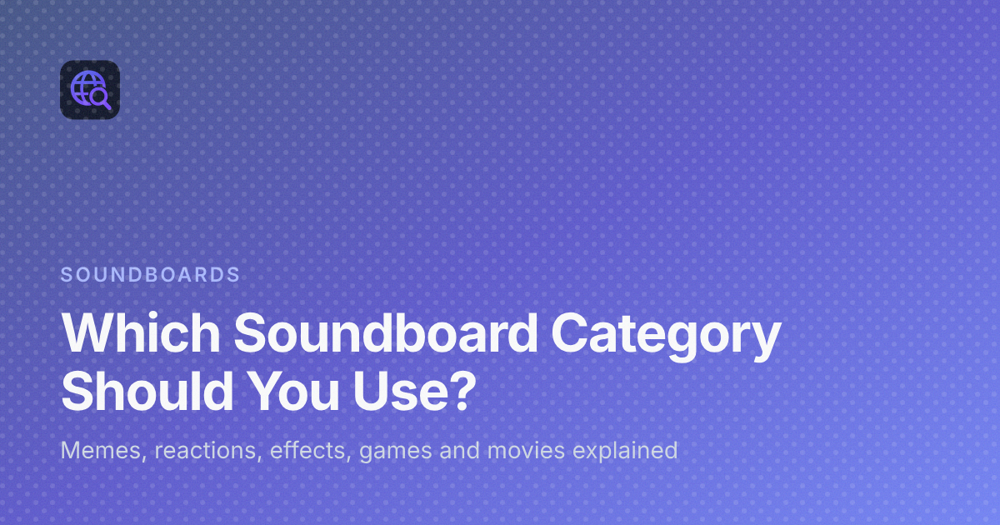

Which Soundboard Category Should You Use? Memes, Reactions, Sound Effects, Games and Movies Explained
A soundboard library is organised by category, and the category names look obvious until you need a sound in a hurry. Is a crowd laugh a reaction or a sound effect? Is a quote from a game a meme or a game sound? Picking the wrong category costs a few minutes of scrolling, and picking the right one often finds the sound at once.
This guide explains what the main categories on a browser soundboard are for, how they overlap, and a quick way to choose between them. It uses the categories on Meme Tap as examples, but the thinking applies to any large board.
Why categories exist
A big library is useful only if you can narrow it down. Search works when you know a name. Categories work when you know a feeling or a situation: something funny, a reaction, a game moment, a plain effect. A good category answers the question "where would I look if I did not know what the clip was called?"
Because clips come from many sources, categories mix two ideas. Some are about the source, such as a game or a film. Others are about the job, such as a reaction or a plain effect. Knowing which kind of category you are in explains most of the confusion.
Memes: the shared references
The memes category holds clips that people recognise because they have been repeated: a famous line, a viral shout, a short sound that became a joke. These clips work because of shared knowledge. If the audience knows the reference, the clip is instantly funny. If they do not, it falls flat.
Browse the meme sounds page when you want a clip that carries a reference with it. Check your audience first. A reference that is obvious to one community may mean nothing to another.
Reactions: the small human noises
Reactions are clips that respond to something: a gasp, a laugh, a groan, an "oh no". They tend to be short and general, and they do not depend on knowing where they came from. That makes them the safest category for mixed audiences.
If you are adding a response to a video or a call, start with the sound buttons in the reactions category. A reaction clip can usually be played without explanation, because everyone knows what a gasp means.
Sound effects: the plain tools
Sound effects are the building blocks: horns, bells, buzzers, drumrolls, impacts. They are not funny on their own. They become funny, or dramatic, or helpful depending on where you place them. They are also the most reusable, because they carry no reference to wear out.
A page of soundboard buttons for plain effects is the best place to look when you need a signal: the start of a round, a correct answer, the end of time.
Games and movies: sources with a feeling
Categories named after a game, a film or a show are source categories. They collect clips from one place. They are useful when you know what you are looking for, such as a line from a particular scene. They are less useful when you only know the feeling.
If you are not sure what you want, start with a job category such as reactions or effects, and visit a source category only when you can name the source.
A quick way to choose
When you need a sound, ask two questions in this order.
- Do I know the source? If yes, go to the category for that game, film or show. You will find the clip faster than by searching a general category.
- Do I know the job? If the job is a reaction, go to reactions. If it is a signal or a punctuation mark, go to effects. If it is a joke that depends on a shared reference, go to memes.
If both answers are no, start with reactions. They are short, general and forgiving, and a few presses usually point you towards what you want.
Where categories overlap
Categories overlap, and that is normal. A clip might be a meme in one community and a plain reaction in another. A game sound might be used as an effect because it is short and clear. Do not treat the labels as strict. Treat them as the first place to look.
A practical habit is to check two categories before giving up. If a sound is not in memes, try reactions. If it is not in effects, try the source category. The same clip is sometimes easier to find from a different direction.
Combine categories with the other views
Categories are one way to slice a library. Trending, Recently Added, Random and Favourites are others. Categories answer "what kind of sound do I want?", while the other views answer "what is popular, what is new, what is a surprise and what is mine?"
A useful combination: pick a category first, then look at its most popular clips. That gives you a short, relevant list of sounds that many people already find useful.
Choosing for the audience
The right category depends on who will hear the sound.
- A mixed or unfamiliar audience: reactions and plain effects. They need no background knowledge.
- A group that shares a reference: memes or a source category, because the shared knowledge is the joke.
- A formal setting: plain effects only, played quietly, or no sound at all.
Preview every clip first. Titles do not always say what you will hear, and a clip that seems fine by name may have strong language or a long lead-in.
Volume and length matter in every category
Whatever category you choose, the same practical rules hold. Keep clips short, keep the volume below the voices around them and test on the speaker you will actually use. A well-chosen clip played too loud is still a bad choice.
A five-minute routine
- Write down the job of the sound in one line.
- Choose a category using the two questions above.
- Preview five clips from that category.
- Pick the one that is shortest and clearest.
- Test the volume on the real device.
Five minutes is usually enough. If you are still looking after that, change the category and try again, rather than scrolling further down the same list.
Frequently asked questions
Which category should a beginner start with? Reactions. The clips are short, widely understood and easy to judge by ear.
Why is the same sound in two places? Categories reflect how different people describe a clip. A sound can fit more than one job.
Do I need to know the source of a clip? No. If you do not know it, use a job category and let the preview tell you what the clip is.